대회와 조건
이 자료는 House Video Competition(하우스 영상 대회)에 낼 영상을 찍기 전에 쓰는 Video Planning Sheet(영상 기획표)다.
촬영(filming)을 시작하기 전에 7칸(7 boxes)을 전부 채워야 한다.
기획표 작성 시간은 25분(time limit: 25 minutes)이다.
완성된 영상은 최대 1분 30초(max video length: 1.5 minutes)를 넘으면 안 된다.
BOX 1~2: 이름과 하우스
BOX 1에는 학생 이름(Student Name)을 쓴다.
BOX 2에는 자기가 속한 하우스 이름(House Name)을 쓴다.
BOX 3: 영화 제목
BOX 3에는 영화 제목(Title of Film)을 쓴다.
자료에 나온 예시는 다음과 같다.
'A teacher accidentally becomes a student'(선생님이 실수로 학생이 된다)
'The worst school assembly ever'(역대 최악의 학교 조회)
'A student discovers they can read minds'(한 학생이 남의 마음을 읽을 수 있다는 걸 알게 된다)
'The House Cup is stolen'(하우스 컵을 도둑맞았다)
'School in 2050'(2050년의 학교)
예시를 보면 제목만 봐도 어떤 이야기인지 짐작이 가게 짓는다.
BOX 4: 줄거리
BOX 4에는 줄거리(Plot)를 설명한다.
핵심 이야기(key story line)를 시작(beginning), 중간(middle), 끝(ending)으로 나눠 요약(summarise)한다.
길이는 최대 150단어(max 150 words)다.
BOX 5: 출연진과 역할
BOX 5에는 출연진(Cast)과 각자 맡은 역할(Roles)을 쓴다.
중요한 조건이 있다. 모둠의 모든 학생은 반드시 대사(spoken dialogue)를 한 마디 이상 해야 한다(MUST).
말 없이 서 있기만 하는 역할은 안 된다.
BOX 6: 소품
BOX 6에는 계획한 소품(Props)을 쓴다.
촬영 때 쓸 교실 물건(classroom items)과 재료(materials)를 목록(list)으로 적는다.
BOX 7: 촬영 담당
BOX 7에는 누가 찍을지(Who Will Film)를 쓴다.
카메라를 잡을 사람(camera operator), 곧 녹화(recording)를 맡을 학생 이름을 정확히(specify) 적는다.
✍️ 꼭 알아야 하는 것
- 영상은 최대 1분 30초(1.5 minutes)이고, 기획표는 촬영 전에 25분 안에 7칸을 다 채워야 한다
- 모둠의 모든 학생은 대사(spoken dialogue)를 한 마디 이상 해야 한다
- 줄거리(Plot)는 시작·중간·끝(beginning, middle, ending)으로 나눠 150단어 이내로 요약한다
📚 이 자료의 핵심 단어
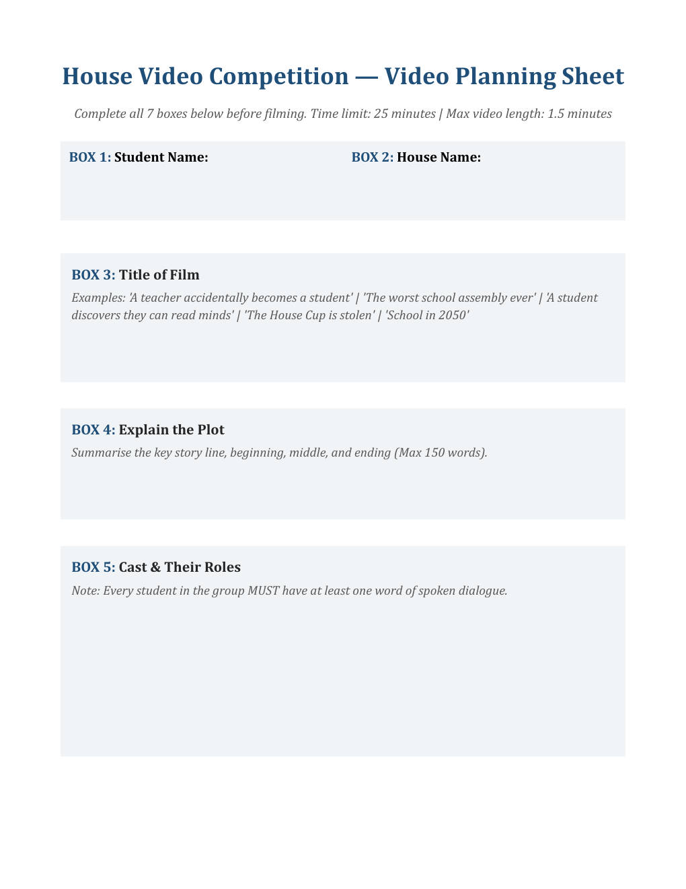
1쪽 · 하우스 영상 대회 기획서 (1)
촬영하기 전에 아래 7개 칸을 모두 채운다.
제한 시간: 25분 | 영상 최대 길이: 1.5분
칸 1: 학생 이름
칸 2: 하우스 이름
칸 3: 영화 제목
예시: '선생님이 실수로 학생이 된다' | '역대 최악의 학교 조회' | '한 학생이 남의 마음을 읽을 수 있다는 것을 알게 된다' | '하우스컵을 도둑맞았다' | '2050년의 학교'
칸 4: 줄거리 설명하기
핵심 이야기를 처음, 중간, 끝으로 나눠 요약한다(최대 150단어).
칸 5: 출연진과 맡은 역할
주의: 모둠의 모든 학생은 반드시 대사를 한 마디 이상 말해야 한다.
촬영 전에 기획서 7칸을 모두 채워야 하고, 기획서 작성 시간은 25분, 영상은 1.5분(90초)을 넘으면 안 된다.
줄거리(Plot)는 처음·중간·끝이 드러나게 150단어 이내로 요약하고, 모둠원 전원이 대사(spoken dialogue)를 한 마디 이상 해야 한다.
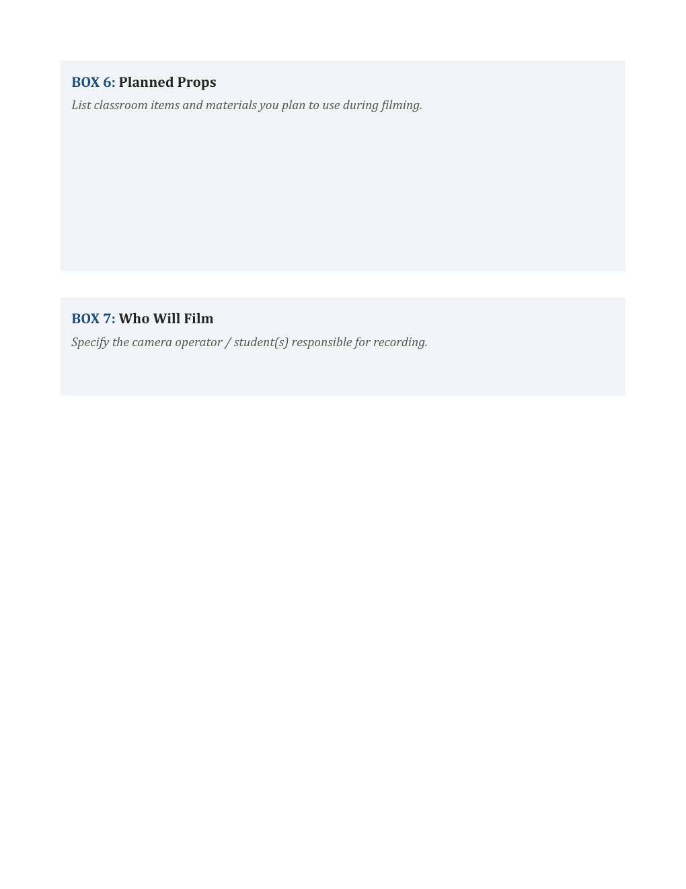
2쪽 · 촬영 소품과 촬영 담당자
촬영하는 동안 쓸 계획인 교실 물건과 재료를 적는다.
BOX 7: 촬영할 사람
녹화를 맡을 카메라 담당자나 학생(들)을 적는다.
BOX 6에는 촬영에 쓸 교실 물건과 재료를 적고, BOX 7에는 녹화를 맡을 카메라 담당자나 학생 이름을 적는다.
하우스 행사House Events학급
이 자료는 학교 4개 하우스(House)가 겨루는 피구(Dodgeball) 대회 안내문이다. 각 하우스는 두 개의 작은 팀으로 나뉘어 Pool A(Team 1)와 Pool B(Team 2)에 들어간다. 즉 8개 팀이 3개 코트에서 동시에 경기하고, 한 팀에서 코트에 설 수 있는 인원은 한 번에 최대 10명이다. 최종 우승은 Team 1과 Team 2의 점수를 합산(cumulative)해서 정한다.
진행은 브리핑 → 4라운드 → 시상식 순이다. 한 경기는 시계를 멈추지 않고 4~5분 연속으로 돌아가며, 라운드 사이에는 코트를 비우고 팀을 바꾸는 2분의 여유가 있다. 점수는 승리 2점, 무승부 1점, 패배 0점이다. 시간이 끝났을 때 살아남은 선수가 더 많은 팀이 이기고, 수가 같으면 무승부다. 시간 전에 상대를 전멸(Wipeout)시키면 경기를 다시 시작해 점수를 더 딸 수 있다.
경기 규칙의 핵심은 이렇다. 공은 중앙선에 6개를 놓고 시작하며, 선수들이 공을 집으면 5초 카운트다운 뒤에 시작된다. 바닥이나 벽에 튕기지 않고 직접 맞힌 공(Direct Hit)만 아웃으로 인정된다. 공을 잡으려다 떨어뜨리면 아웃이고, 내가 던진 공을 상대가 공중에서 잡아도 내가 아웃이다. 들고 있는 공으로 막는 블록(Defensive Block)은 되지만, 그때 들고 있던 공을 놓치면 아웃이다.
아웃된 선수는 상대 코트 뒤쪽 감옥(Prison) 벤치에 서 있어야 한다. 하지만 코트에 있는 우리 팀 동료가 벤치로 공을 던져 주고 그 공을 깨끗하게 받으면 다시 경기장으로 복귀할 수 있다. 코트 양쪽 끝 뒤에는 Prison Hoops가 놓이고, 그 구역은 수비를 하지 않는(No defending) 구역이다.
반칙과 태도 규정도 분명하다. 머리를 맞히는 것(Headshot)은 절대 금지이고, 심판에게 따지면 경고나 퇴장이다. 스스로 맞았다고 정직하게 인정하는 self-calling이 하우스 정신이라고 강조한다. 비신사적 행동이나 위험한 투구는 경고·옐로카드·즉시 대회 퇴출까지 갈 수 있다.
✍️ 꼭 알아야 하는 것
- 9학년(Year 9)은 9월 17일 목요일 6교시에 축구장(Football Field)에서 모이며, 반드시 하우스 키트(HOUSE Kit)를 입어야 한다.
- 점수 체계(승 2점·무 1점·패 0점)와 아웃되는 세 가지 경우 — 직접 맞음, 잡으려다 떨어뜨림, 내가 던진 공이 잡힘 — 그리고 벤치에서 동료의 공을 받으면 복귀한다는 규칙을 기억해야 한다.
📚 이 자료의 핵심 단어
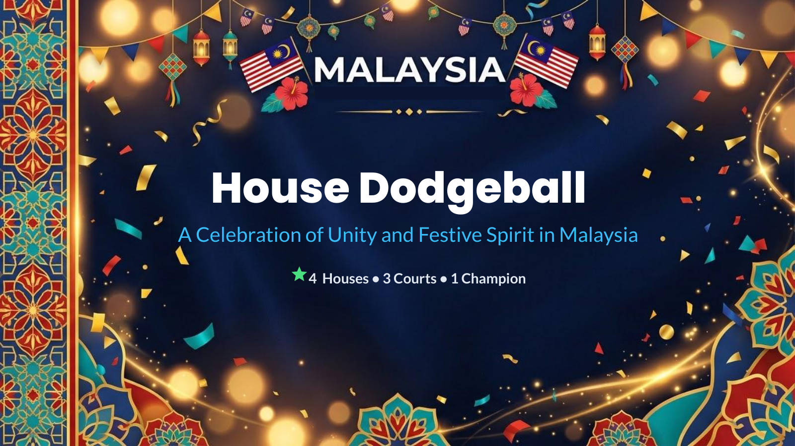
말레이시아에서 열리는 화합과 축제 정신을 기념하는 행사다.
4개 하우스 • 3개 코트 • 1명의 챔피언
이 쪽은 자료의 표지로, 대회 이름과 규모(하우스 4개·코트 3개·우승 1팀)만 적혀 있다
'House(하우스)'는 학교에서 학생들을 나눈 팀을 뜻한다
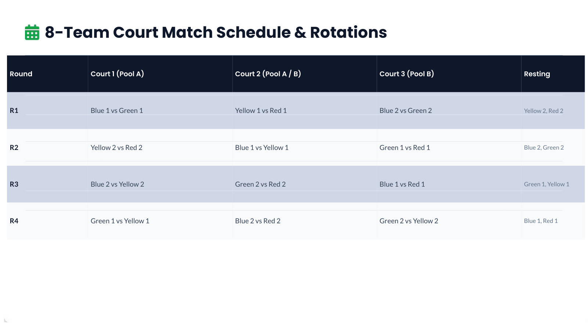
표의 칸은 라운드, 코트 1(A조), 코트 2(A조/B조), 코트 3(B조), 쉬는 팀으로 나뉜다.
1라운드: 코트 1은 블루 1 대 그린 1, 코트 2는 옐로 1 대 레드 1, 코트 3은 블루 2 대 그린 2이며, 옐로 2와 레드 2가 쉰다.
2라운드: 코트 1은 옐로 2 대 레드 2, 코트 2는 블루 1 대 옐로 1, 코트 3은 그린 1 대 레드 1이며, 블루 2와 그린 2가 쉰다.
3라운드: 코트 1은 블루 2 대 옐로 2, 코트 2는 그린 2 대 레드 2, 코트 3은 블루 1 대 레드 1이며, 그린 1과 옐로 1이 쉰다.
4라운드: 코트 1은 그린 1 대 옐로 1, 코트 2는 블루 2 대 레드 2, 코트 3은 그린 2 대 옐로 2이며, 블루 1과 레드 1이 쉰다.
코트 3개에서 경기가 동시에 열리고, 매 라운드마다 두 팀은 쉰다.
코트 1은 A조, 코트 3은 B조 경기이고, 코트 2만 A조와 B조를 함께 쓴다.
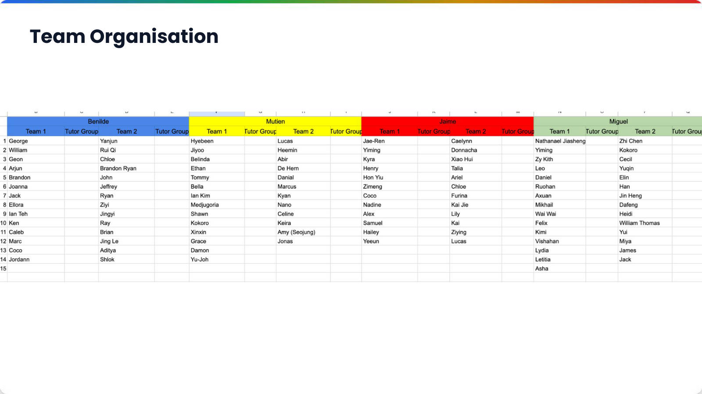
이 쪽은 팀 구성(Team Organisation) 부분이 시작되는 표지다.
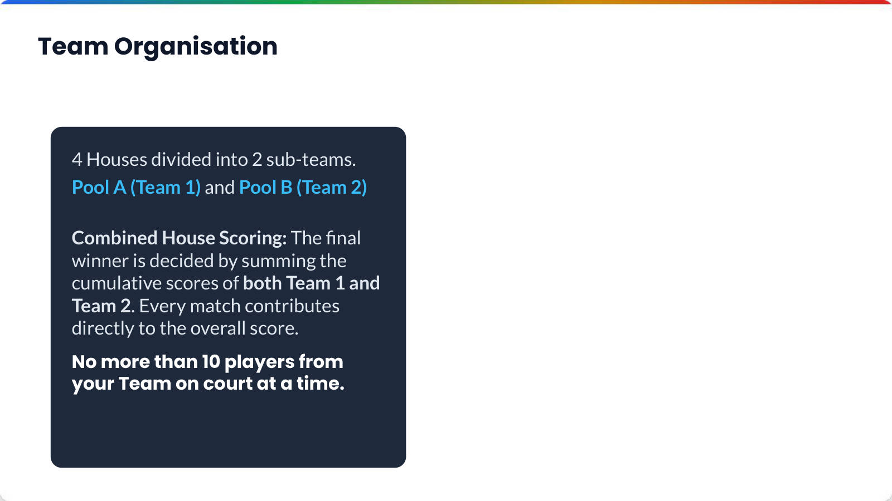
4개 하우스가 각각 2개의 하위 팀으로 나뉜다.
Pool A(팀 1)와 Pool B(팀 2)로 나뉜다.
하우스 합산 점수: 최종 우승은 팀 1과 팀 2의 누적 점수를 합해서 정해진다.
모든 경기가 전체 점수에 직접 반영된다.
한 번에 코트에 설 수 있는 우리 팀 선수는 10명을 넘을 수 없다.
하우스 하나가 Pool A(팀 1)와 Pool B(팀 2) 두 팀으로 나뉘고, 두 팀의 누적 점수를 합한 값으로 최종 우승 하우스를 정한다. 그래서 어느 한 경기도 버리는 경기가 없다.
코트에 동시에 나갈 수 있는 인원은 한 팀당 최대 10명이다.
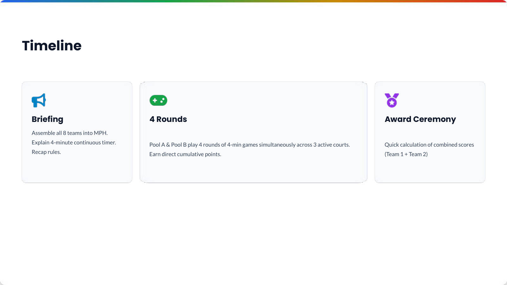
브리핑
8개 팀 전부를 MPH로 모은다.
4분 연속 타이머를 설명한다.
규칙을 다시 짚어 준다.
4라운드
A조와 B조가 3개 코트에서 동시에 4분 경기를 4라운드 치른다.
점수는 누적으로 바로 쌓인다.
시상식
합산 점수(1팀 + 2팀)를 빠르게 계산한다.
브리핑 → 4라운드 경기 → 시상식 순서로 진행된다.
한 경기는 4분이고, 코트 3개에서 동시에 치러 점수를 누적한다.
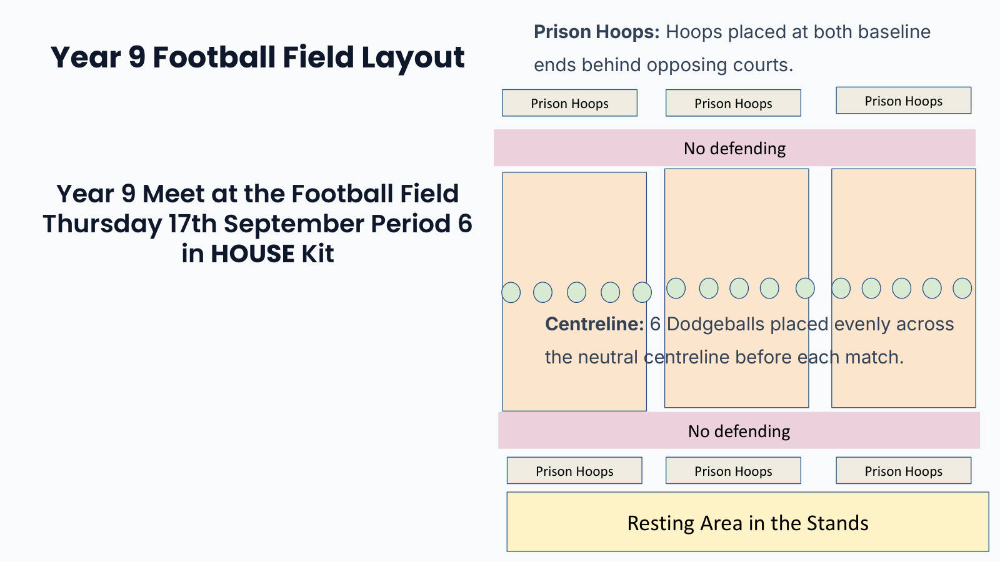
9월 17일 목요일 6교시다.
하우스 킷을 입고 온다.
감옥 후프: 상대편 코트 뒤 양쪽 베이스라인 끝에 후프를 놓는다.
9학년 축구장 배치도다.
감옥 후프
수비 금지
수비 금지
관중석에 휴식 구역이 있다.
감옥 후프
감옥 후프
감옥 후프
감옥 후프
감옥 후프
중앙선: 매 경기 시작 전 피구공 6개를 중앙 중립선에 고르게 놓는다.
9학년 경기는 9월 17일 목요일 6교시에 축구장에서 열리며, 하우스 킷을 입어야 한다.
감옥 후프는 상대 코트 뒤 베이스라인 양 끝에 놓이고, 그 구역은 수비가 금지되며, 휴식 구역은 관중석에 있다.
경기 시작 전 중앙 중립선에 피구공 6개를 고르게 배치한다.
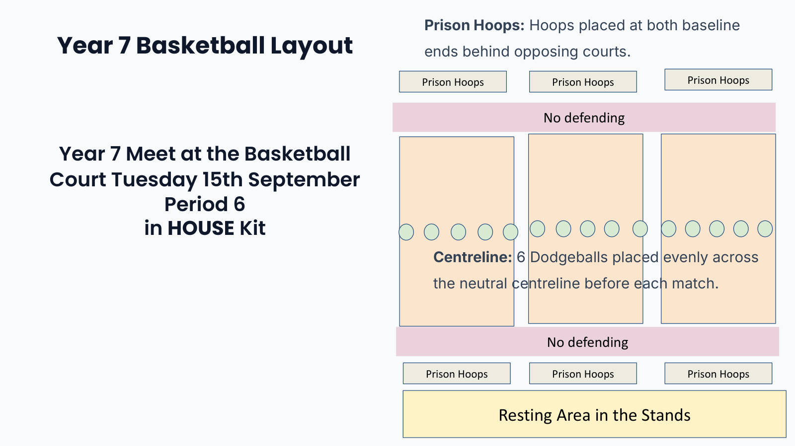
날짜는 9월 15일 화요일, 6교시다.
하우스 키트를 입고 온다.
감옥 링(Prison Hoops): 링은 상대편 코트 뒤 양쪽 베이스라인 끝에 놓는다.
7학년 농구 코트 배치도다.
감옥 링
수비 금지
수비 금지
휴식 구역은 관중석에 있다.
감옥 링
감옥 링
감옥 링
감옥 링
감옥 링
센터라인: 매 경기 전 공 6개를 중앙 중립선에 고르게 놓는다.
7학년 집합 정보는 장소(농구 코트)·날짜(9월 15일 화요일)·시간(6교시)·복장(하우스 키트) 네 가지다.
코트 배치의 핵심은 세 가지다 — 감옥 링은 상대 코트 뒤 베이스라인 양 끝에 두고, 피구공 6개는 중앙선에 고르게 놓으며, 휴식 구역은 관중석에 있다. '수비 금지(No defending)' 구역도 표시돼 있다.
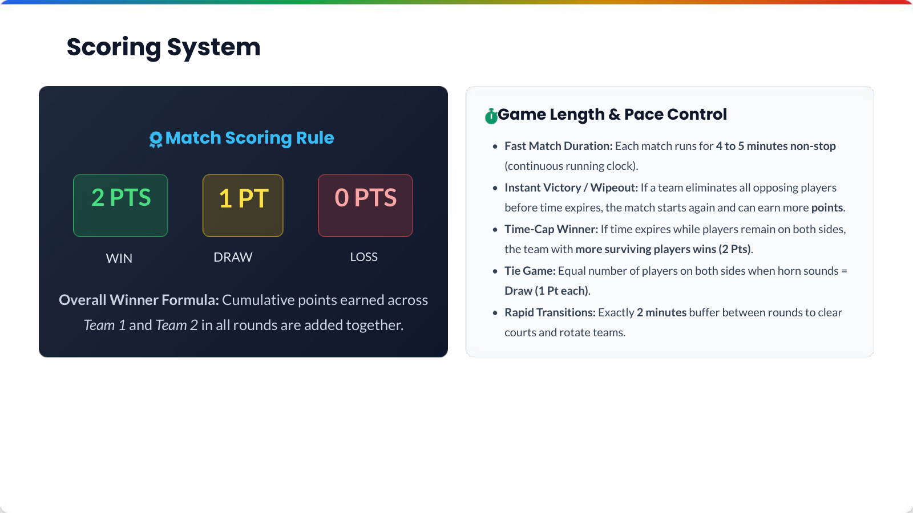
경기 점수 규칙
종합 우승 공식: 팀 1과 팀 2가 모든 라운드에서 얻은 점수를 누적해 합산한다.
경기 길이와 속도 조절
• 빠른 경기 시간: 각 경기는 4~5분 동안 쉬지 않고 진행된다(시계를 계속 돌리는 방식).
• 즉시 승리 / 전멸: 시간이 끝나기 전에 한 팀이 상대 선수를 모두 아웃시키면, 경기를 다시 시작해 점수를 더 얻을 수 있다.
• 시간 종료 승자: 시간이 다 됐는데 양쪽에 선수가 남아 있으면, 살아남은 선수가 더 많은 팀이 이긴다(2점).
• 무승부: 경적이 울릴 때 양쪽 선수 수가 같으면 무승부(각 1점).
• 빠른 교대: 라운드와 라운드 사이에 코트를 비우고 팀을 교체하는 시간은 정확히 2분이다.
2점 승리
1점 무승부
0점 패배
점수는 승리 2점, 무승부 1점, 패배 0점이며, 모든 라운드의 점수를 다 합쳐 종합 우승을 정한다
경기는 4~5분 연속 진행이고 라운드 사이 쉬는 시간은 2분이며, 시간이 끝났을 때는 살아남은 선수 수로 승패를 가른다
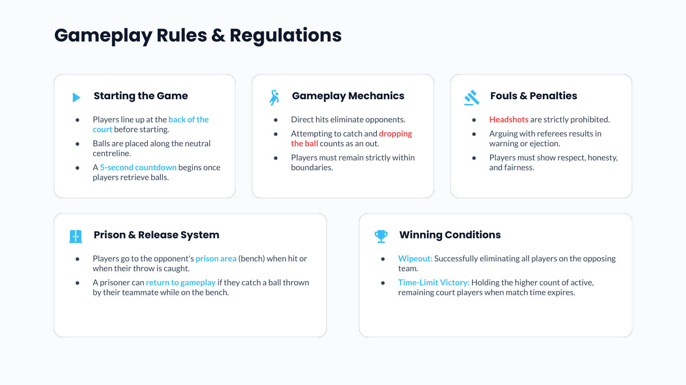
경기 시작
선수들은 시작 전 코트 뒤쪽에 줄을 선다.
공은 가운데 중앙선을 따라 놓는다.
선수들이 공을 잡으러 가면 5초 카운트다운이 시작된다.
경기 방식
직접 맞으면 상대는 탈락한다.
공을 잡으려다 떨어뜨리면 아웃으로 친다.
선수는 반드시 선(경계) 안에 있어야 한다.
반칙과 벌칙
머리 맞히기는 엄격히 금지된다.
심판에게 항의하면 경고나 퇴장을 받는다.
선수는 존중, 정직, 공정함을 보여야 한다.
감옥과 복귀 규칙
공에 맞거나 자기가 던진 공을 상대가 잡으면 상대편 감옥(벤치)으로 간다.
벤치에 있는 동안 같은 팀 선수가 던진 공을 잡으면 경기로 돌아올 수 있다.
승리 조건
전멸(Wipeout): 상대 팀 선수를 전부 탈락시키는 것이다.
시간 승리: 경기 시간이 끝났을 때 코트에 남은 선수가 더 많은 팀이 이긴다.
아웃되는 경우는 세 가지다 — 공에 직접 맞을 때, 잡으려다 떨어뜨릴 때, 내가 던진 공을 상대가 잡을 때다.
감옥에 가도 끝이 아니다. 벤치에서 같은 팀 공을 잡으면 다시 코트로 돌아온다.
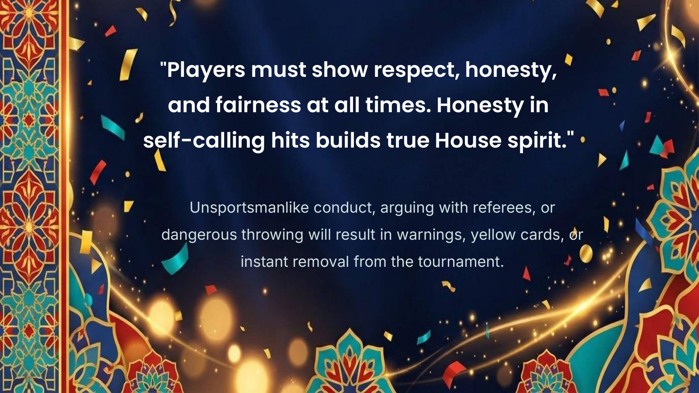
맞았을 때 스스로 정직하게 인정하는 것이 진정한 하우스 정신을 만든다.
비신사적인 행동, 심판에게 항의하는 것, 또는 위험한 던지기는 경고나 옐로카드, 또는 대회에서 즉시 퇴장이라는 결과로 이어진다.
맞은 것을 스스로 인정하는 정직함이 하우스 정신의 핵심이다
비신사적 행동·심판 항의·위험한 던지기는 경고, 옐로카드, 즉시 퇴장으로 벌한다
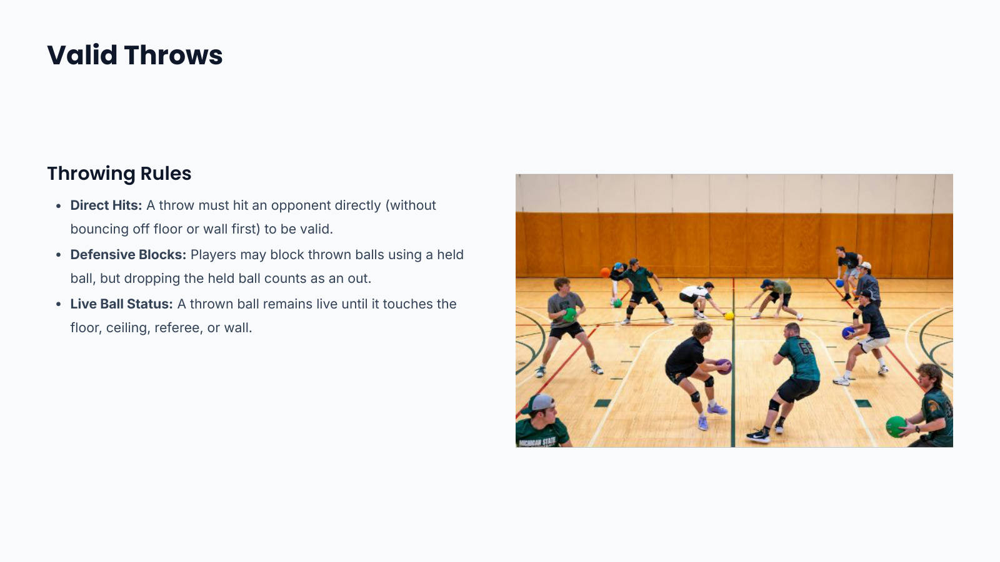
• 직접 맞히기: 던진 공이 바닥이나 벽에 먼저 튀지 않고 상대를 직접 맞혀야 유효하다.
• 수비 막기: 선수는 들고 있는 공으로 날아오는 공을 막을 수 있으나, 들고 있던 공을 떨어뜨리면 아웃이다.
• 살아 있는 공: 던진 공은 바닥·천장·심판·벽에 닿을 때까지 살아 있는 상태다.
유효한 던지기
튀긴 공은 무효다 — 바닥이나 벽에 먼저 닿은 공으로 맞혀도 유효한 던지기가 아니다.
공으로 막는 것은 허용되지만, 막다가 들고 있던 공을 놓치면 그 선수가 아웃이다.
던진 공이 바닥·천장·심판·벽에 닿기 전까지는 계속 살아 있어, 그 사이에 맞으면 아웃이 된다.
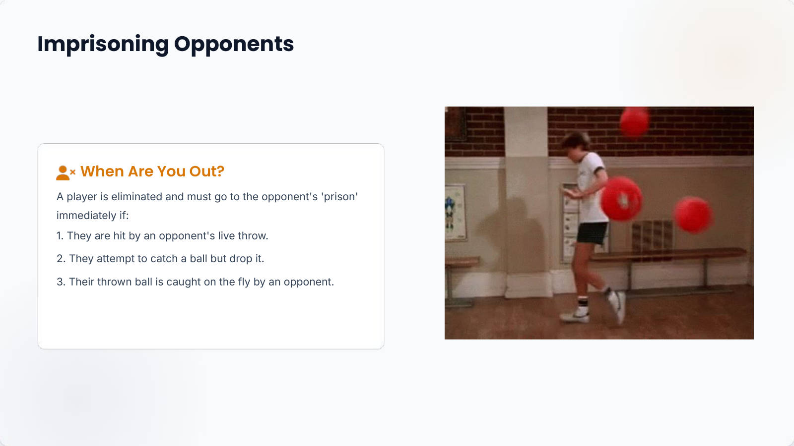
다음의 경우 선수는 탈락하고 즉시 상대편의 '감옥'으로 가야 한다:
1. 상대의 살아 있는 공에 맞았을 때.
2. 공을 잡으려다 놓쳤을 때.
3. 자신이 던진 공을 상대가 땅에 닿기 전에 잡았을 때.
상대를 가두기
아웃되면 그 자리에 있지 않고 상대편 '감옥'으로 즉시 이동한다
공을 잡으려다 떨어뜨리면 맞은 것과 똑같이 아웃이고, 내가 던진 공이 공중에서 잡혀도 아웃이다
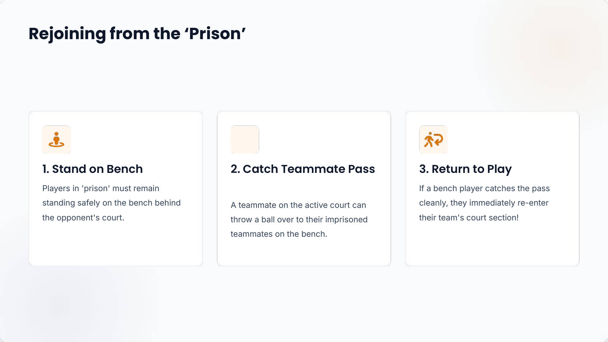
'감옥'에 있는 선수들은 상대편 코트 뒤의 벤치 위에 안전하게 서 있어야 한다.
2. 같은 팀의 패스 받기
살아 있는 코트에 있는 같은 팀 선수가 벤치에 갇힌 동료에게 공을 던져 넘겨줄 수 있다.
3. 경기 복귀
벤치에 있던 선수가 그 패스를 깔끔하게 잡으면, 즉시 자기 팀 코트 구역으로 다시 들어간다!
아웃된 선수는 상대 코트 뒤 벤치 위에 서서 기다린다.
같은 팀이 던진 공을 깨끗하게 받아내면 곧바로 경기에 복귀한다.
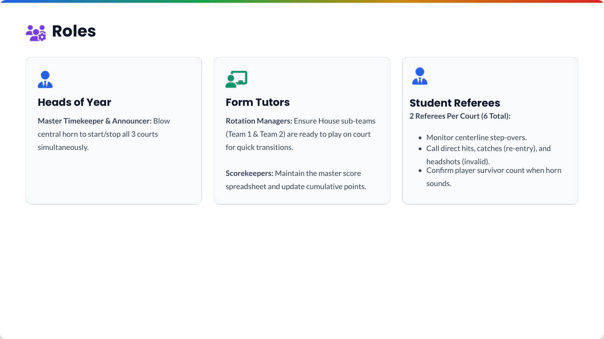
학년 부장(Heads of Year)
총괄 시간기록 및 방송 담당: 중앙 경적을 불어 3개 코트를 동시에 시작·정지시킨다.
담임 교사(Form Tutors)
로테이션 관리자: 각 하우스의 하위 팀(1팀·2팀)이 코트에서 바로 경기할 수 있도록 준비시켜 교대를 빠르게 한다.
점수 기록자: 마스터 점수 스프레드시트를 관리하고 누적 점수를 갱신한다.
학생 심판
코트당 심판 2명(총 6명):
• 중앙선을 넘는지 감시한다.
• 직접 맞은 것, 캐치(재투입), 헤드샷(무효)을 판정한다.
• 경적이 울리면 생존 선수 수를 확인한다.
역할은 세 층으로 나뉜다 — 학년 부장은 경적으로 3개 코트를 동시에 통제하고, 담임 교사는 팀 교대와 점수 기록을 맡고, 학생 심판은 코트 위 판정을 맡는다.
학생 심판은 코트마다 2명씩 총 6명이며, 중앙선 침범·직접 타격·캐치(재투입)·헤드샷(무효) 판정과 경적 시점의 생존 인원 확인을 담당한다.
말레이시아의 화합과 축제의 정신을 기리는 자리.
마지막 쪽은 구호와 행사 취지를 한 줄로 요약한 마무리 문구다
Unity(화합)와 Festive Spirit(축제 분위기)이 이 대회의 핵심 주제다
Spirit Day는 하우스(House)끼리 겨루는 학교 체육·놀이 행사다. 학년별로 경기 날짜(Match Days)가 다르고, 9학년(Year 9)은 8월 20일 목요일이며 시간은 오후 2시 30분부터 3시 25분까지다. 장소는 LMC 바깥 구역과 농구장(Basketball Court)이고, 네 개 레인에서 하우스 팀들이 맞붙는다.
KS3(7~9학년)이 하는 종목은 메가 릴레이(The Mega Relay Clash)다. ①Egg Race는 하우스마다 한 명이 계란을 떨어뜨리지 않고 달리는 것, ②3-Legged Race는 두 명이 한 조가 되어(두 조) 장애물 코스를 지나는 것, ③Hungry Hippos는 한 명이 스케이트보드에 타고 짝이 끌어주며 60초 동안 볼풀공을 최대한 많이 담는 것(상대 것을 빼앗아도 된다), ④Mystery Bottles는 시간 안에 숨겨진 병 5개의 순서를 맞히는 것이다.
자기 차례가 아닐 때도 사이드 게임(Side Quests)으로 하우스 점수를 쌓을 수 있다. Bottle Flip은 병 세우기에 성공할 때마다, Bean Bag Toss는 훌라후프 안에 콩주머니를 넣을 때마다 점수가 되고, 성공 하나당 1점이다. 각 스테이션 담당자가 점수를 실시간으로 기록한다.
순위 점수는 1등 15점, 2등 10점, 3등 5점, 4등 2점이다. 점심시간 행사로 8월 21일 금요일 12시 50분~1시 20분에 LMC에서 우정 팔찌(Friendship Bracelets) 만들기와 포토부스(Photobooth)가 열리며, 7~13학년 누구나 참여할 수 있다. 참가비는 RM 5, 폴라로이드 사진은 한 장에 RM 7이고 재료는 모두 제공되니 현금만 들고 가면 된다.
✍️ 꼭 알아야 하는 것
- 9학년 경기일은 8월 20일 목요일 오후 2시 30분~3시 25분, 장소는 LMC 바깥과 농구장이라는 점
- 순위 점수(1등 15점·2등 10점·3등 5점·4등 2점)와 사이드 게임 성공당 1점이 하우스 점수로 합쳐진다는 점
📚 이 자료의 핵심 단어

에너지를 가져오고, 너의 하우스를 대표하고, 최고의 영광을 차지하라!
네가 알아야 할 모든 것
7~13학년
이 자료는 2026년 스피릿 데이 행사 안내문의 표지 쪽이다.
대상은 7학년부터 13학년까지이며, 학생들은 각자 소속 하우스를 대표해 참가한다.

• 7학년 8월 18일 화요일
• 8학년 8월 19일 수요일
• 9학년 8월 20일 목요일
장소: LMC 구역 바깥 + 농구장
팀 구성: 하우스 팀이 4개 레인에서 속도와 기술로 맞대결한다!
KS3 활동: 메가 릴레이 대결
학년마다 경기 날이 다르다. 9학년은 8월 20일 목요일이고, 시간은 오후 2시 30분부터 3시 25분까지다.
하우스별로 팀을 짜서 4개 레인에서 1대1로 겨루는 릴레이 경기다.

1. 계란 옮기기 달리기(Egg Race Run)
2. 2인 3각 달리기(3-Legged Run)
• 계란 옮기기: 계란을 떨어뜨리지 말고 달려라! 각 하우스에서 1명씩 나온다.
• 2인 3각 경주: 둘이 짝을 이뤄 장애물 코스를 통과한다(2쌍).
3. 배고픈 하마(Hungry Hippos)
• 한 명은 스케이트보드를 타고, 짝이 끌어준다!
• 60초 안에 볼풀 공을 최대한 많이 양동이에 담아라.
• 상대 것을 빼앗아 앞서 나가라!
4. 미스터리 병(Mystery Bottles)
• 병 순서 맞히기: 시간이 다 되기 전에 숨겨진 5개 병의 순서를 알아내라!
릴레이는 네 종목이다 — 계란 옮기기, 2인 3각, 배고픈 하마, 미스터리 병.
인원이 정해져 있다 — 계란 옮기기는 하우스당 1명, 2인 3각은 2쌍, 배고픈 하마는 2인 1조(타는 사람·끄는 사람)다.

이 쪽에는 읽을 문장이 없으므로 앞뒤 쪽의 내용을 이어서 본다.

기다리는 동안 하우스 점수를 벌어라!
지금 메인 릴레이 경기에 뛰지 않는가? 관중석에 앉아만 있지 마라!
사이드 게임을 해서 우리 하우스 점수를 쌓아라.
병 뒤집기 도전: 성공하면 바로 점수를 얻는다!
콩주머니 던지기: 점수가 높은 훌라후프를 노려라.
실시간 점수 집계: 스테이션 담당자가 딴 점수를 하나도 빠짐없이 기록한다!
사이드 퀘스트: 추가 점수를 쌓아라!
릴레이에 뛰지 않는 시간에도 사이드 게임으로 하우스 점수를 벌 수 있다.
사이드 게임은 병 뒤집기와 콩주머니 던지기 두 가지이며, 성공 1회당 1점씩 스테이션 담당자가 기록한다.

어디서: 드라마룸 KS5, 폼룸(교실) KS4
행사 담당: Jenny와 Vincent
눈가리개 술래잡기(15분): 20명이 한 팀으로 둥글게 서고, 눈을 가린 가운데 2명이 자리를 바꾸는 사람들을 잡으려 한다!
노래 맞히기 달리기(15분): 노래 조각을 듣고 달려가 경적을 잡고 곡 이름을 말한다!
KS4와 KS5 활동: 코로나 시절 되돌아보기 🔥
이 쪽 행사는 8월 21일 금요일 오전 10시부터 30분간 열리며, KS5는 드라마룸에서 KS4는 폼룸에서 한다.
눈가리개 술래잡기와 노래 맞히기 달리기 두 가지를 각각 15분씩 하고, 담당은 Jenny와 Vincent다.

시상대 순위 / 기숙사에 주는 점수
🥇 1st Place Gold(1등 금) — 15점
🥈 2nd Place Silver(2등 은) — 10점
🥉 3rd Place Bronze(3등 동) — 5점
🎗 4th Place(4등) — 2점
순위마다 기숙사에 주는 점수가 다르다 — 1등 15점, 2등 10점, 3등 5점이다.
4등도 2점을 받는다. 시상대 밖이어도 점수가 0이 아니다.

언제: 8월 21일 금요일 오후 12시 50분 ~ 오후 1시 20분
어디서: LMC
누구: 고등부 전체 학생 대상, Y7~Y13
가격: 입장 RM 5 | 폴라로이드 사진 1장당 RM 7
왜: 나만의 하우스 팔찌를 만들고, 앞으로 있을 SRC 행사 기금을 모으기 위해서다
꿀팁: 재료는 모두 제공된다! 현금만 좀 챙겨 오면 된다.
입장료 RM 5와 폴라로이드 사진값 RM 7은 따로 든다. 사진을 찍으려면 둘을 합쳐 내야 한다.
팔찌 재료는 학교에서 다 준비해 주므로 챙겨 갈 것은 현금뿐이다.

2026년 스피릿 데이를 역대 최고의 날로 만들자!
주 담당자: 스포츠 위원회 리드 – Soon Zheng Ng
이메일: 27soonzhengng@sji-international.edu.my
공동 주최: SRC와 각 하우스 캡틴
궁금한 점은 스포츠 위원회 리드인 Soon Zheng Ng에게 위 이메일로 물어보면 된다.
행사는 SRC와 하우스 캡틴들이 함께 주최한다.
학급 임원·인성Tutor Reps & Character학급
이 자료는 HS Outstanding Character Award(고등부 우수 품격상) 상장을 학생이 직접 만들어 내는 디자인 대회 안내다. 상장은 품격(character), 개인적 성장, 끈기, 친절, 리더십, 봉사, 학교 공동체에 대한 기여에서 뛰어난 학생을 표창하는 데 쓰인다. 즉 '누구에게 주는 상인가'가 정해져 있고, 그 뜻에 맞는 상장을 만드는 것이 과제다.
가장 중요한 것은 반드시 들어가야 하는 항목이다. ① HS Outstanding Character Award라는 상 이름, ② 학교 이름, ③ 학교 로고(logo), ④ 학생 이름을 적는 자리, ⑤ 수상 이유를 적는 자리, ⑥ 날짜와 서명(signature) 자리다. 하나라도 빠지면 조건을 못 채운 것이 된다. 로고는 이 게시물에 첨부된 학교 로고만 써야 하고, 인터넷에서 다른 로고를 가져오면 안 된다.
필수 항목 말고는 자유롭게 해도 된다. 디자인, 글씨체(font), 그림, 색깔, 테두리(border), 배치(layout)는 본인 마음대로 정할 수 있다. 만드는 방법도 컴퓨터로(digitally) 해도 되고 손으로 그려도(by hand) 된다. 둘 중 자기가 더 잘하는 쪽을 고르면 된다.
디자인의 방향은 전문적이고(professional), 의미 있고, 명예로운 느낌이며 고등학생에게 어울려야 한다는 것이다. 목표는 상을 받은 학생이 간직하고 남에게 보여주고 싶어지는 상장을 만드는 것이다. 그러니 장난스럽거나 대충 만든 느낌보다는, 진짜 학교에서 주는 상장처럼 보이게 만드는 것이 핵심이다.
✍️ 꼭 알아야 하는 것
- 필수 6가지 — 상 이름(HS Outstanding Character Award), 학교 이름, 학교 로고, 학생 이름 칸, 수상 이유 칸, 날짜·서명 칸을 모두 넣어야 한다.
- 로고는 이 게시물에 첨부된 학교 로고만 사용하며, 제작은 디지털이든 손그림이든 상관없다.
📚 이 자료의 핵심 단어
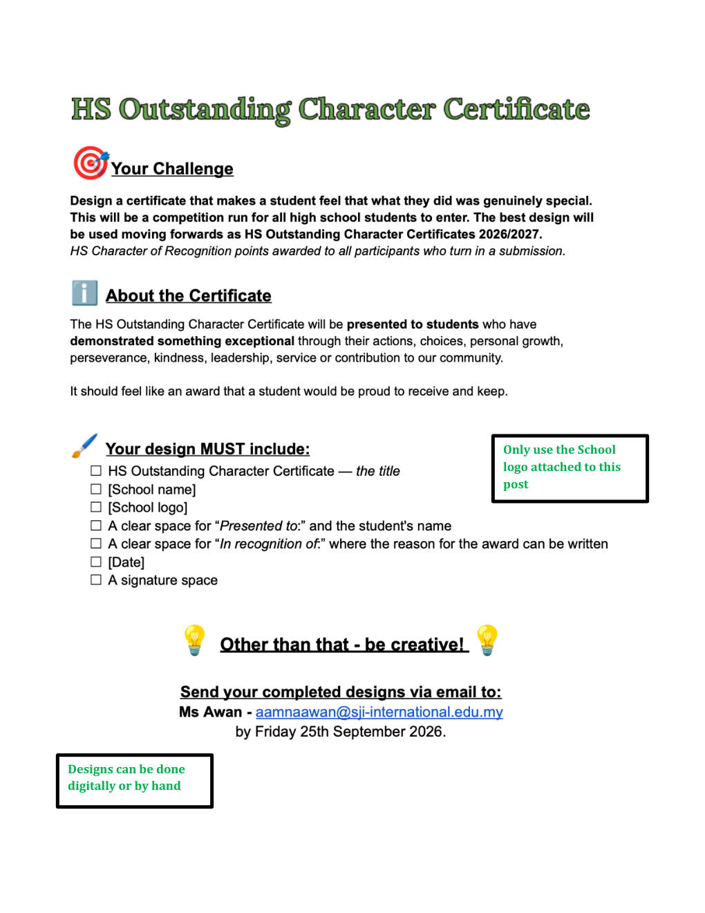
디자인은 디지털로 하거나 손으로 그려도 된다.
학교 로고는 이 게시물에 붙어 있는 것만 쓸 수 있다
디자인 방식은 디지털과 손그림 둘 다 가능하다
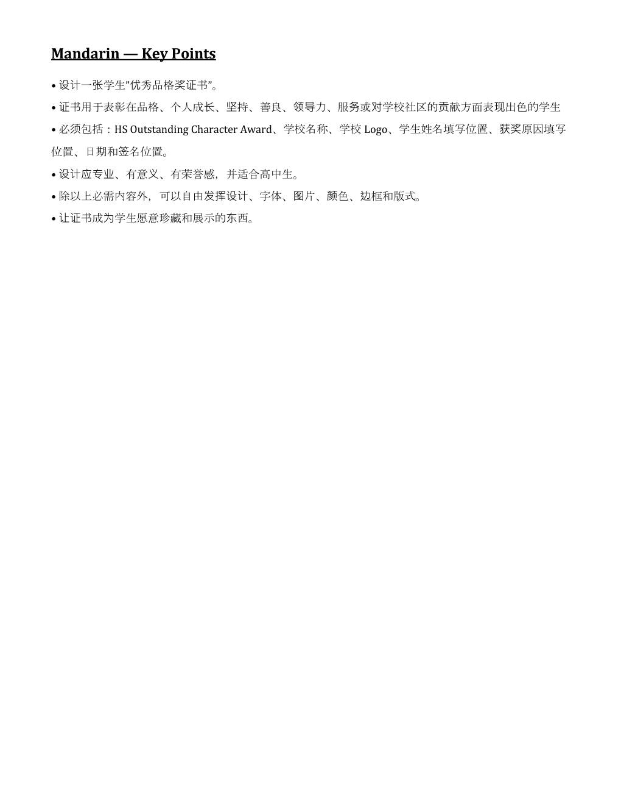
• 학생용 "우수 품격상 증서" 한 장을 디자인한다.
• 이 증서는 품격, 개인적 성장, 끈기, 친절, 리더십, 봉사, 또는 학교 공동체에 대한 기여 면에서 뛰어난 모습을 보인 학생을 표창하는 데 쓴다.
• 반드시 들어가야 할 것: HS Outstanding Character Award, 학교 이름, 학교 로고, 학생 이름 적는 자리, 수상 이유 적는 자리, 날짜와 서명 자리.
• 디자인은 전문적이고 의미 있고 영예로운 느낌이어야 하며, 고등학생에게 어울려야 한다.
• 위 필수 내용 말고는 디자인·글꼴·그림·색·테두리·판형을 자유롭게 해도 된다.
• 증서를 학생이 간직하고 자랑하고 싶어 하는 것으로 만든다.
이 쪽은 앞쪽 영어 과제 설명을 중국어로 정리한 것이다. 필수 항목 여섯 가지(상 이름·학교 이름·로고·학생 이름 자리·수상 이유 자리·날짜와 서명 자리)만 지키면 나머지는 자유다.
표창 대상이 되는 자질은 품격·개인적 성장·끈기·친절·리더십·봉사·학교 공동체 기여 일곱 가지다.
이 자료는 9학년(Year 9) 담임반 대표(Tutor Representatives)에 관한 포스터다. 포스터는 글이 길지 않고 그림과 큰 글씨로 알리는 안내물이므로, 공부할 내용이라기보다 학교 소식을 전하는 게시물에 가깝다.
Tutor는 담임(생활지도 담당 선생님)을 뜻하고, Tutor group은 그 선생님이 맡은 담임반이다. Representative는 그 반을 대표해서 의견을 전달하는 학생이다. 즉 각 담임반에서 뽑힌 학생 대표를 알리는 자료라는 뜻이다.
이 글이 올라온 곳은 Dani Grego 선생님이 올린 게시물(Post)이다. 자세한 이름이나 날짜 같은 세부 내용은 포스터 그림 안에 들어 있으므로, 실제 포스터를 눈으로 직접 확인해야 한다.
✍️ 꼭 알아야 하는 것
- Tutor group은 담임반, Representative는 반 대표 학생을 뜻한다는 것
- 이 자료는 시험 범위가 아니라 학교 안내용 포스터라는 것

이 쪽에는 YEAR 9(9학년)라는 글자만 적혀 있다
그 밖의 자료안내 · 도구공통
이 자료에는 실제 학습 내용이 들어 있지 않다. 제목이 DELETE(삭제)이고 올린 사람이 Dani Grego라는 것 외에는 뽑아낼 수 있는 글자가 없다. 선생님이 올렸다가 지우려고 표시해 둔 게시물(post)로 보이는 자료다.
✍️ 꼭 알아야 하는 것
- 이 자료 자체에는 공부할 내용이 없으므로, 같은 단원의 다른 게시물에서 내용을 찾아야 한다.
이 자료는 Student Handbook(학생 핸드북) 단원에 올라온 안내다. 선생님은 학생 핸드북 링크(link)를 첨부했다고 적었고, 그 안에 올 한 해 동안 학교생활을 해 나가면서 쓸모 있는 정보가 많이 들어 있다고 설명했다. 즉 이 글의 본래 목적은 핸드북을 학생들에게 나눠 주는 것이다.
제목에 붙은 Canva는 '놀랍도록 간단한 그래픽 디자인 소프트웨어(Amazingly Simple Graphic Design Software)'라고 소개돼 있다. 자료에는 이 이름과 함께 canva 주소 하나가 걸려 있다. 자료에 적힌 것은 여기까지이므로, Canva로 무엇을 어떻게 하라는 구체적인 지시는 이 글에 들어 있지 않다.
글은 Aug 17(8월 17일)에 올라왔고, 종류는 Material(수업 자료)이다. 과제(assignment)가 아니라 읽고 참고하라고 올린 자료라는 뜻이다. 아래쪽의 View material 버튼을 누르면 실제 내용을 열어 볼 수 있다.
✍️ 꼭 알아야 하는 것
- 학생 핸드북은 한 해 학교생활에 필요한 정보가 모여 있는 문서이므로, 링크를 열어 한 번 훑어 두는 것이 좋다.
- 이 자료에 걸린 링크는 Canva 주소 하나이며, 자료 자체에는 그 이상의 설명이 적혀 있지 않다.
이 자료는 Assignment, 즉 선생님이 낸 과제다. 과제 이름은 Acceptable Use Policy Link이고, 학교가 정한 이용 규정(Acceptable Use Policy)을 확인하는 링크가 걸려 있다. 읽고 끝나는 자료가 아니라, 학생이 직접 열어서 제출해야 하는 항목이다.
제목에 Google Forms: Sign-in이 붙어 있다. 이 폼을 열려면 먼저 로그인(Sign-in)을 해야 한다는 뜻이다. 개인 구글 계정이 아니라 학교에서 준 학교 계정으로 로그인해야 폼이 열리는 경우가 많으니, 안 열리면 로그인된 계정부터 확인하는 것이 좋다.
제출 기한은 Due Aug 18, 곧 8월 18일까지다. 옆에 있는 more_vert(점 세 개 모양)와 More options는 그 과제에 대한 추가 메뉴를 여는 버튼이다. 거기서 과제 상세 보기 같은 기능을 쓸 수 있다.
✍️ 꼭 알아야 하는 것
- 이 과제의 마감은 8월 18일(Due Aug 18)이므로 그 전에 폼을 제출해야 한다.
- 폼을 열려면 로그인(Sign-in)이 필요하며, 학교에서 받은 계정으로 접속해야 한다.
이 자료는 Link to YouHQ라는 제목으로 올라온 자료(Material)다. 수업 내용을 설명하는 글이 아니라, youHQ라는 사이트로 이동하는 링크(link)를 학생들에게 알려주려고 올린 것이다. 단원 이름도 똑같이 Link to YouHQ이므로, 이 단원은 그 사이트를 쓰는 것이 목적이다.
자료 제목이 youHQ Login이라는 점이 중요하다. 그냥 들어가서 보는 페이지가 아니라 로그인(login)을 해야 쓸 수 있는 곳이라는 뜻이다. 즉 자기 계정으로 들어가야 안에 있는 내용을 볼 수 있다.
올라온 날짜는 8월 24일(Posted Aug 24)이다. 옆에 있는 더 보기(more_vert, More options)는 이 자료를 열거나 다루는 메뉴 버튼이며, 공부 내용이 아니라 화면 조작 부분이다.
✍️ 꼭 알아야 하는 것
- 이 자료는 설명글이 아니라 youHQ 사이트로 가는 링크라는 것
- youHQ는 로그인(login)을 해야 들어갈 수 있다는 것